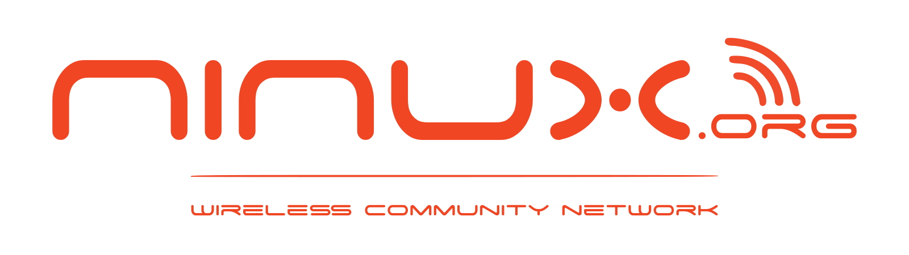

Il servizio WiFi "NINUX Free WiFi" è gestito da NINUX Basilicata (ninux-nnxx.it). Per qualsiasi richiesta sui tuoi dati scrivi a admin@ninux-nnxx.it.
Non registriamo il contenuto delle comunicazioni né i siti visitati.
Per fornire il servizio (autenticazione e gestione dell'account), per la sicurezza e il corretto funzionamento della rete e per rispondere a eventuali richieste delle autorità previste dalla legge.
I dati restano sui server di NINUX Basilicata e non vengono venduti né ceduti a terzi, salvo quando lo richiede la legge.
Puoi chiedere di accedere ai tuoi dati, di correggerli o di cancellarli, e di limitarne o opporti al trattamento (artt. 15-22 del Regolamento UE 2016/679), scrivendo all'indirizzo sopra. Puoi anche presentare reclamo al Garante per la protezione dei dati personali (garanteprivacy.it).
Per cancellare l'account e i dati collegati, compresi quelli ricevuti da Google o Facebook, scrivi a admin@ninux-nnxx.it dall'indirizzo email dell'account, indicando il nome utente. Cancelliamo i dati entro 30 giorni e te lo confermiamo per email. Puoi anche rimuovere l'accesso dell'app «NINUX Basilicata WiFi» dalle impostazioni del tuo account Google o Facebook.
The "NINUX Free WiFi" service is run by NINUX Basilicata (ninux-nnxx.it). For any request about your data write to admin@ninux-nnxx.it.
We do not record the content of communications or the websites you visit.
To provide the service (authentication and account management), for the security and proper operation of the network, and to answer requests from the authorities where required by law.
The data stays on NINUX Basilicata's servers and is not sold or given to third parties, except where required by law.
You can ask to access, correct or delete your data, and to restrict or object to its processing (articles 15-22 of EU Regulation 2016/679), by writing to the address above. You can also lodge a complaint with the Italian data protection authority (garanteprivacy.it).
To delete your account and the related data, including the data received from Google or Facebook, write to admin@ninux-nnxx.it from the email address of the account, stating your username. We delete the data within 30 days and confirm it by email. You can also remove the access of the "NINUX Basilicata WiFi" app from the settings of your Google or Facebook account.